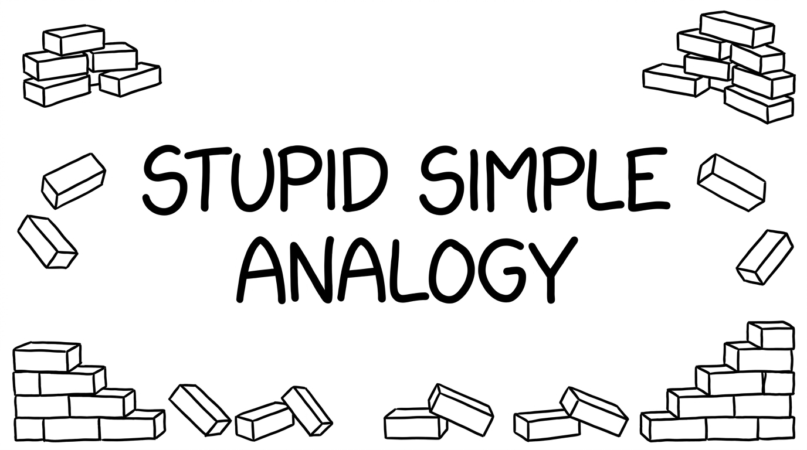

<section id="simple-title" data-transition="fade" style="display:flex; flex-direction:row; align-items:center; justify-content:center; padding:0; background:#fcfcfa">
  
<p style="position:absolute;left:0;bottom:10px;width:1920px;margin:0;text-align:center;font-family:'Patrick Hand', 'Trebuchet MS', sans-serif;font-size:22px;color:#8a8f98">Copyright Dobromir Montauk 2026</p>
<aside>A stupid simple analogy. Let’s make it concrete with the simplest job imaginable: bricks.&nbsp;<br><br>(yes, because it is so stupid-simple, it won't map 1:1 with our jobs. That shouldn't prevent you from getting the lessons)</aside>
</section>
